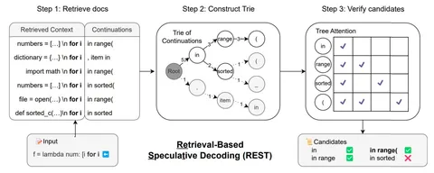
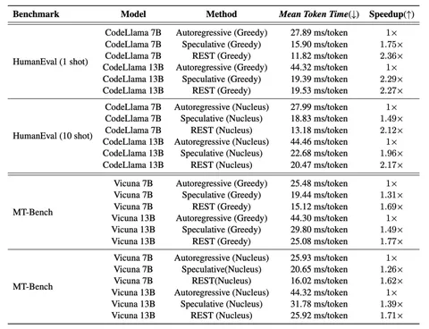

Сегодняшняя статья посвящена методу Retrieval-Based Speculative Decoding (REST). По словам авторов, он позволяет ускорить генерацию токенов более чем в два раза. А в основе подхода лежит спекулятивное декодирование. О нём сперва коротко и расскажем.
Спекулятивное декодирование (Speculative Decoding) — это метод, который направлен на ускорение генерации за счёт использования дополнительной, более компактной и быстрой модели. Она предлагает варианты продолжения цепочек токенов, которые затем проверяются основной моделью. Если предсказания обеих моделей совпадают, токены принимаются, в противном случае — отбрасываются.
Однако у этого метода есть ограничения и недостатки. Необходимо найти такую вспомогательную модель, которая обладала бы высокой точностью, но при этом не тратила слишком много вычислительных ресурсов. Кроме того, малые модели требуют дополнительного обучения.
Авторы статьи предлагают использовать вместо меньшей модели базу данных, построенную на суффиксном массиве и включающую корпусы кодов и текстов — например, диалогов UltraChat. Из базы извлекаются:
Контексты (contexts) — последовательности токенов, которые служат отправной точкой для поиска продолжений.
Продолжения (continuations) — следующие за контекстом токены, представляющие возможные варианты развития текста или кода.
Подходящие продолжения организуются в древовидную Trie-структуру, где каждый узел — это токен. Далее выбираются те последовательности токенов, которые повторяются чаще всего. Их называют кандидатами (candidates).
Кандидаты проверяются с помощью маски Tree Attention. Её особенность состоит в том, что всё осуществляется всего за один проход трансформера. Оптимизация достигается за счёт того, что у многих продолжений одинаковые префиксы.
Модель принимает все токены, которые успешно прошли проверку с самого начала, а то, что следует за первой ошибкой — отбрасывает. После этого процесс начинается снова для оставшихся токенов.
Результаты тестов на CodeLlama и Vicuna показали прирост в скорости генерации токенов с использованием REST в 1,62–2,36 раза. Однако методу ещё есть, куда развиваться. Так, авторы отмечают, что результат сильно зависит от полноты и качества базы данных, и рекомендуют собирать её, используя LLM. Кроме того, возникают трудности с пониманием контекста — например, при генерации персонализированных названий переменных в программировании.
Рассказывайте в комментариях, а что вы думаете о REST?
Разбор подготовил
Душный NLP
